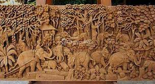
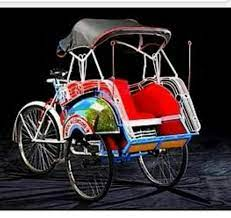

Budaya Nusantara

Budaya Nusantara adalah beberapa kesenia yang tumbuh dan berkembang sejak zaman dahulu yang menjadi warisan bagi generasi mudah sebagai khas dari negara indonesia.
Social Media
Ukiran Kayu Jepara
Seni umumnya diartikan sebagai ekspresi hasrat manusia terhadap suatu keindahan tertentu. Bentuk keindahan tersebut mewujud dalam bentuk seni yang imajinatif pun kreatif guna memberikan kepuasan batin bagi manusia. Dalam hubungannya dengan kebudayaan, kesenina merupakan luapan imajinasi kreatif dari masyarakat yang mewujud pada karya tertentu..
Selengkapnya >>Becak
Transportasi tradisional merupakan bentuk kebudayaan nusantara yang tercipta sebagai pemenuhan kebutuhan masyarakat. Pemenuhan berupa tuntutan hidup dalam memudahkan perpindahan barang ataupun akses menuju tempat tertentu. Contohnya becak di Daerah Istimewa Jogjakarta..
Selengkapnya>>